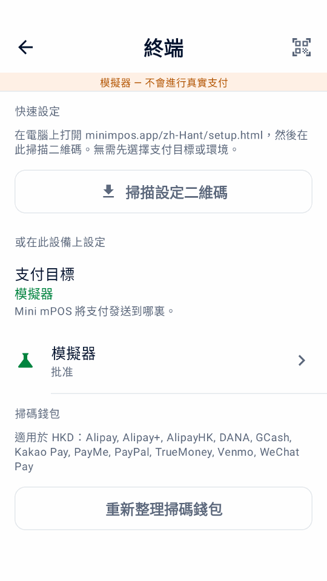

檢查前提條件
請在安裝當天之前確認以下內容。設備運行 Mini mPOS，終端讀取銀行卡；兩者可以是同一台設備。
選擇設備設定
- 在 Adyen 終端上運行
- 一台設備完成整個收銀流程。需要 Android 9 或更高版本的 Adyen Android 支付終端。目前型號請參閱 Adyen Android 終端指南。
- 平板或手機搭配網絡終端
- 櫃台建議方式。Android 9+ 平板或手機與 Adyen 終端位於同一區域網絡。終端上無需安裝 Mini mPOS。
- 平板或手機搭配雲端終端
- 適用於位於不同網絡的設備和終端。兩者都需要互聯網連接，付款通過 Adyen 發送到終端。
- 在手機上使用 Tap to Pay
- 無需獨立終端。使用支援近場通信（NFC）的手機和 Adyen Payments 應用程式，並由 Adyen 支援團隊開通。請檢查 Adyen 手機要求 與 Adyen 支援的國家和付款方式。
比較配置
| 配置 | 連接 | 收據 | 功能限制 |
|---|---|---|---|
| 在 Adyen 終端上運行 | 互聯網及終端內部的本地連接 | 內置打印機或電郵 | 可設定本地離線處理；不提供獨立顧客螢幕。 |
| 平板或手機搭配網絡終端 | 同一網絡的 TCP 8443；互聯網 | 終端打印機、電郵或分享 | 支援獨立顧客螢幕；可設定本地離線處理。 |
| 平板或手機搭配雲端終端 | 兩部裝置均需互聯網 | 終端打印機、電郵或分享 | 支援獨立顧客螢幕；雲端路由不提供離線處理。 |
| 在手機上使用 Tap to Pay | 互聯網；兼容 NFC 手機 | 電郵或分享；無打印機 | 不支援終端小費、顧客螢幕、MOTO/MKE、離線處理或終端對賬。 |
終端功能取決於型號、付款方式及 Adyen 設定。請測試所需流程。 檢查 Adyen 功能.
- 列印需要內置打印機的終端。如果沒有打印機，可改為發送電子收據或分享收據。
- 掃描條碼、退款二維碼或設定二維碼需要相機。
準備網絡
請店舖的網絡管理員放行以下連接：
- 互聯網
- 允許設備和終端通過 TCP 443 向
*.adyen.com和*.adyenpayments.com發起 HTTPS 出站連接。請 按域名放行，而不是按 IP 地址，因為 Adyen 的 IP 地址會變化。 - 區域網絡（適用於網絡終端）
- 平板或手機必須能通過 TCP 8443 存取終端的 IP 地址。請將兩者連接到同一網絡，並確保 Wi-Fi 用戶端隔離（訪客網絡常見）不會隔開它們。
- 電子收據（可選）
- 允許出站存取您的 SMTP 伺服器，通常為 TCP 587（STARTTLS）或 465（SSL/TLS）。
請在路由器中為每台網絡終端設定 DHCP 保留，固定其 IP 地址。雲端和 Tap to Pay 設定中的平板或手機可使用移動資料，但搭配網絡終端時不行。終端本身的網絡要求請參閱 Adyen 網絡設定指南。
準備 Adyen 憑據
通過 Adyen 驗證設定需要有效的測試商戶帳戶、已開通的實體店付款服務及商戶後台（商戶後台）存取權限。先使用 TEST 憑據及 TEST 終端或 Adyen Payments Test。上線時改用對應的 LIVE 帳戶、憑據及終端或 Payments 應用程式。
建立或編輯憑據時，商戶後台用戶需有 Manage API credentials 或 Merchant admin 權限。這些是用戶權限，不是 API 密鑰的角色。
請按照 Adyen 支付方式設定指南開通計劃接受的 POS 支付方式。Mini mPOS 使用終端已設定的支付方式。
- 在商戶後台進入 Developers › API credentials，為 Mini mPOS 建立憑據並生成 API 密鑰；參見 Adyen API 憑據指南。
- 為主 API 密鑰啟用以下額外角色：
- Management API - Terminal actions read
- Management API - Terminal settings read and write
- Management API - Terminal settings Advanced read and write
- Cloud Device API role
- API tokenise payment details
- LIVE 環境下，記下 Developers › API URLs 中的 LIVE URL 前置字元。
- 所有設定都需要上述主 API 憑據角色。使用 Tap to Pay 時，Mini mPOS 會自動建立具有 Adyen Payments App role 和客戶端密鑰的商戶層級獨立憑據。請 Adyen 支援團隊開通 Tap to Pay，並容許透過公司憑據指派該角色。
- 如需手動設定設備：
- 記下商戶帳戶。
- Adyen 終端、網絡終端或 Tap to Pay：在 Devices › Device settings › Integrations › Terminal API › Encryption key 中找到共享密鑰（識別碼、口令和版本）。雲端終端不使用共享密鑰。
核對完整的憑據要求
除上述五個額外角色外，亦須保留下列預設付款及 Management API 角色。現有憑據可能已移除部分預設角色。所有配置的主憑據要求相同；只有手機註冊使用的獨立憑據需要 Adyen Payments App role。
- Merchant PAL webservice role
- Checkout webservice role
- Management API - API credentials read and write
- Management API - Payment methods read
- Management API - Stores read
- Management API - Accounts read
- Merchant Recurring role
重要
Mini mPOS 沒有伺服器，API 密鑰會加密儲存在設備上。請建立僅供 Mini mPOS 使用、只含您的設定所需 API 角色的憑據。設定管理員 PIN，設備遺失時撤銷憑據。請閱讀 安全政策。
說明
Mini mPOS 是獨立項目，並非 Adyen 製作、認可或支援的產品。帳戶及平台操作請遵循連結中的 Adyen 文檔。
安裝應用程式
從最新發佈版本下載已簽名的 minimpos-<version>.apk。
- Adyen 終端
- 在商戶後台上傳 APK 並部署到終端；參見 Adyen 應用程式部署指南 。用戶需有上傳和部署應用程式的權限。
- 在終端上打開 Mini mPOS，選擇連接 Adyen，點按繼續。
- 平板或手機
- 在設備上打開 APK，按 Android 提示允許瀏覽器或檔案管理器安裝應用程式。
- 打開 Mini mPOS，選擇連接 Adyen，點按繼續。
重要
每次更新都要使用同一簽名來源。終端會拒絕以不同密鑰簽名的更新。自行構建和簽名請參閱 貢獻者指南。
連接 Adyen
連接會將 Mini mPOS 與其終端或 Adyen Payments 應用程式綁定（終端綁定），並檢查 Adyen API 密鑰。只需按照您的設定操作。每種設定都有兩種方式： 設定助手（建議），或在設定 › 終端中手動輸入。


從電腦掃描設定二維碼
- 在可信電腦上開啟設定助手。二維碼在本地產生；請參閱網站託管及私隱說明。
- 選擇 Mini mPOS 的運行位置和環境：TEST 或 LIVE。
- 選擇自動（建議）只需輸入 Adyen API 密鑰，其餘由設備查詢；選擇手動則輸入全部連接資訊。
- 填寫所需資訊。
- 點按生成二維碼。請保持頁面打開：頁面會顯示 12 位傳輸碼。
- 在 Mini mPOS 中打開設定 › 終端，點按掃描設定二維碼或右上角的二維碼圖示。閱讀說明，點按我已有二維碼，掃描全部二維碼。
- 檢查支付目標和環境，輸入傳輸碼，點按驗證並匯入。
- 如有提示，選擇您的終端。使用 Tap to Pay 時，請在 Payments 應用程式開啟後完成註冊。全部檢查通過前不會儲存任何內容。
連接 Adyen 終端
前提條件
- Mini mPOS 已部署到終端
- 與終端同一環境的 Adyen API 密鑰
- 終端可存取互聯網
手動
- 在設定 › 終端 › Adyen API中輸入 Adyen API 密鑰和商戶帳戶，LIVE 還需輸入 LIVE URL 前置字元。點按尋找要設定的終端 以測試 API 存取並自動補充共享密鑰，或點按測試 API後手動繼續設定。
- 檢查或輸入共享密鑰，點按測試連接。
綁定同一網絡中的終端
前提條件
- Mini mPOS 已安裝在平板或手機上
- 與終端同一環境的 Adyen API 密鑰
- 設備和終端位於同一網絡，且兩者之間開放 TCP 8443
手動
- 在設定 › 終端中，將支付目標設為同一網絡中的終端。在環境 中選擇與終端一致的 TEST 或 LIVE。
- 在 Adyen API 中輸入 Adyen API 密鑰和商戶帳戶，LIVE 還需輸入 LIVE URL 前置字元。點按尋找要設定的終端 以測試 API 存取並選擇終端。手動補充缺失的資料。
- 檢查或輸入終端的 IP 地址和終端 ID（POIID）。兩者都顯示在終端的“Device info”畫面。
- 檢查或輸入共享密鑰，點按測試連接。
連接雲端終端
前提條件
- Mini mPOS 已安裝在平板或手機上
- 與終端同一環境的 Adyen API 密鑰
- 設備和終端都可存取互聯網
- 設定助手（建議）
- 在設定助手中選擇在平板電腦或手機上運行、配合通過互聯網連接的終端（雲端），以及終端的 TEST 或 LIVE 環境和自動。輸入 API 密鑰，然後掃描二維碼。找到多台終端時，請選擇您的終端。
手動
- 在設定 › 終端中，將支付目標設為通過互聯網連接的終端（雲端）。在環境 中選擇與終端一致的 TEST 或 LIVE。
- 在 Adyen API 中輸入 Adyen API 密鑰和商戶帳戶，LIVE 還需輸入 LIVE URL 前置字元。點按尋找要設定的終端 以測試 API 存取並選擇終端。手動補充缺失的資料。
- 檢查或輸入終端 ID（POIID），點按測試連接。
設定 Tap to Pay
前提條件
- Adyen 已為您的公司開通 Tap to Pay 和 Adyen Payments App role；請 聯繫 Adyen 支援團隊
- Mini mPOS 已安裝在受支援的手機上
- Adyen API 密鑰和共享密鑰
- 從 Google Play 安裝 TEST 用的 Adyen Payments Test 或 LIVE 用的 Adyen Payments 。兩者可以同時安裝。
- 在 Mini mPOS 中打開設定 › 終端，選擇在本手機上使用 Tap to Pay，再在環境中選擇 TEST 或 LIVE。Mini mPOS 只會開啟所選環境的應用程式。
- 設定助手（建議）
- 在設定助手中選擇在手機上運行、使用 Adyen Payments 應用程式的 Tap to Pay，以及 TEST 或 LIVE 環境。輸入對應環境的 Adyen API 密鑰、商戶帳戶和共享密鑰，可選填店舖 ID。掃描二維碼 後點按驗證並匯入。Mini mPOS 會建立註冊憑據並開啟 Payments 應用程式，在匯入過程中完成註冊。
手動
- 在設定 › 終端 › Adyen API中輸入 Adyen API 密鑰和商戶帳戶。LIVE 還需輸入 LIVE URL 前置字元。點按測試 API。
- 在 Tap to Pay 中可點按選擇店舖或手動輸入店舖 ID，毋須額外 API 密鑰。
- 點按設定 Tap to Pay，在 Payments 應用程式中完成註冊。
- 在 Mini mPOS 中輸入共享密鑰。
Payments 應用程式無法進行連接測試，請通過一筆 TEST 付款確認設定。以後要取消註冊手機，請使用移除本手機。
建立缺失的加密密鑰
如果實體終端還沒有加密密鑰，憑據和帳戶檢查通過後，設定會提供建立加密密鑰。
- 檢查顯示的終端 ID 和環境，然後確認。建立期間，請勿在其他位置更改此終端的設定。
- 如果連接尚未驗證，請更新終端設定；參見密鑰設定恢復。
- 如果建立中斷，請點按繼續密鑰設定。二維碼設定請重新掃描同一組二維碼並輸入其傳輸碼。
驗證 TEST 設定
- 在設定 › 終端中，確認環境為 TEST。完成最後的測試連接步驟，驗證 API 存取和受支援的連接檢查。
- 實體終端：運行測試連接並確認通過。
- Tap to Pay：確認手機已在 Adyen Payments Test 中註冊。連接檢查只驗證設定，不支援終端診斷。使用下方測試付款檢查付款行為。
- 在設定 › 支付中檢查貨幣，在設定 › 稅中檢查稅率和價格是否含稅。
- 在首頁點按新建銷售，新增自訂商品，然後點按收款。
- 點按支付，按照 Adyen POS 測試指南完成一筆成功付款。
- 確認結果為批准，且收據上的金額、貨幣和稅額正確。在交易紀錄中打開銷售紀錄，用其 PSP 參考編號核對 TEST 商戶後台中的付款。
- 為該付款退款，並在 TEST 商戶後台確認最終退款結果。已請求退款並非最終確認。
- 按照 Adyen POS 測試指南的拒付場景再次測試銷售。確認 Mini mPOS 顯示拒付，而非批准；參見付款被拒絕。
警告
如果結果未知，請勿再次付款。請先按恢復步驟處理。
接下來，請在使用 Mini mPOS中設定商品、收據和員工權限。
正式上線
警告
在 TEST、LIVE 和模擬器之間切換會刪除設備上的全部交易紀錄，包括未完成付款的恢複資料。請先處理需處理中的所有付款。
使用可選終端功能前，請檢查 Adyen 功能並測試實際收款目標：終端小費、 部分付款、顧客提示、Giving 和手動輸入卡號、離線處理及 終端對帳。可用性取決於 Adyen 設定和收款目標。
- 在 TEST 中測試計劃使用的可選流程：訂金、收據小費、 付款連結或掃描錢包。訂金和收據小費會凍結資金，直至扣款。請在商戶後台確認最終扣款結果。
- 測試計劃使用的收據交付方式：用實體打印機列印、發送測試郵件或分享收據。
- 設定管理員 PIN，需要時另設經理 PIN；參見員工權限。
- 改用 LIVE 終端或 LIVE 版 Payments 應用程式及 LIVE 憑據。網絡或雲端終端及 Tap to Pay 請在環境中選擇 LIVE。輸入 LIVE URL 前置字元；參見 Adyen LIVE 端點指南。Tap to Pay 需要在所選環境中重新註冊。
- 在設定 › 終端中，確認環境為 LIVE。完成最後的測試連接步驟，驗證 API 存取和受支援的連接檢查。
- 實體終端：運行測試連接並確認通過。
- Tap to Pay：確認手機已在 LIVE 版 Adyen Payments 應用程式中註冊。連接檢查只驗證設定，不支援終端診斷。
日常檢查和對帳請參閱日終結算。
試用模擬器
無需 Adyen 帳戶或終端即可體驗 Mini mPOS，不會扣款。
- 在 Android 9+ 手機或模擬器上安裝應用程式。
- 在歡迎畫面選擇試用示範（而非掃描設定二維碼或連接 Adyen），然後點按 繼續。
- 在設定 › 模擬器中選擇支付結果、延遲以及是否有打印機。開啟離線批准後，可在交易紀錄和 終端對帳中查看離線警告。
在設定 › 資料與轉移中可新增示例資料或刪除示例資料。示例會標為演示。 示例計入演示每日總計和報告；新增示例會以虛構咖啡店取代收據商戶資料， 並於未設定標誌時新增其標誌；刪除示例會保留您自己的商品、交易紀錄、設定和標誌。
付款連結無需 API 憑據即可離線使用，其頁面和收據都標為演示。這些二維碼無法收款；點按模擬支付即可完成演示。
模擬器展示的是 Mini mPOS 的運作方式，而不是您的終端或 Adyen 帳戶支援甚麼。語音引導、離線批准和 Adyen 功能等只是模擬， 請在真實的 TEST 終端上測試後再使用。
準備連接時，在設定 › 模擬器中依次點按設定真實付款和繼續設定。確認 TEST 或 LIVE 會刪除所有本機記錄；示例商品和收據資料會保留，因此請在真實付款前移除示例並檢查商戶資料。先使用 TEST 測試。